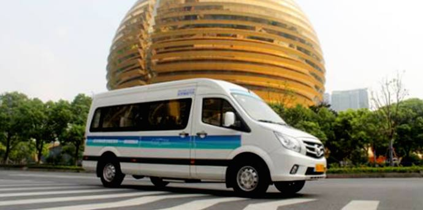
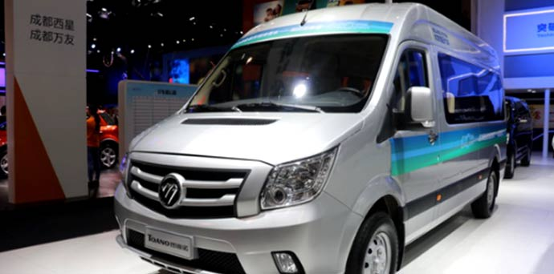

随着九月的结束，令人翘首以盼的国庆“黄金周”马上就要到来了。作为除了春节以外的“小长假”，人们对国庆假期的欢度方式极为重视。近年来，不少民众利用假期做一些日常因工作忙里而无法完成的心愿，旅游、逛街购物、聚会等方式已经屡见不鲜，不过很多爱车人士借国庆假期选购爱车却日益成为潮流。为了满足广大车友的需求，值此国庆假期之际，福田图雅诺诚挚奉送，带来了一场“国庆盛宴”。
据了解，福田图雅诺作为国内商务车的代表，一直受到新老用户的青睐。国庆期间，福田图雅诺联合易车网开展了“福田图雅诺国庆购车节”的优惠活动。据活动方介绍，此次购车节，只要注册就有机会享100元的京东卡，另外，抢购G20赞助用车图雅诺2016款2.8L手动轻客版ISF2.8车型可享99元抵30000元，限量33台；抢购图雅诺国五所有车型可享99元抵3000元，数量不限，购完即止！最后只要购买图雅诺、风景G7/G9、蒙派克回传发票的前100名，还可获得由易车提供的500元油卡！
透过市场方面得知，福田图雅诺自上市以来，迅速成为了用户选择高端商务的主流车型，在国内市场更是掀起了一场绿色商务价值的体验风暴，引领行业的走向。据悉，福田图雅诺整车设计与研发由德国斯图加特研发中心进行开发，奔驰凌特车型原班设计团队操刀设计，比同级车更显高端大气；动力方面，搭载了世界级动力康明斯发动机，时刻保证澎湃动力；此外，升级版的国V车型相比原版车型更有4大升级、5大领先、8大优势的优点，可谓是商务车的扛鼎之作。
福田图雅诺因其高品质一直备受国家和人民的喜爱，一次又一次的被选择成为保驾护航的首选。9·3阅兵期间，图雅诺担当了俄罗斯总统普京、韩国总统朴槿惠等31位国家元首以及19位政府级别代表元首座驾，向世界展示了中国制造的高端商务车；另外在今年杭州G20峰会期间，图雅诺再一次全程护航。自2015年上市以来，图雅诺获得了“元首国宾车”、“G20峰会官方指定用车” 、“绿色科技品质护航”一系列荣誉称号，荣誉的背后，肩负的更多是责任，因为每一次的荣誉都是在展示中国制造的名片。
时下，国庆假期日益临近，广大民众都有了自己的出行计划，对于有购车需求的消费者来讲更是一次黄金契机，尤其是想要购买福田图雅诺商务车的客户，那么赶快来参加此次福田图雅诺的国庆购车节活动吧！多重惊喜好礼等你来享。